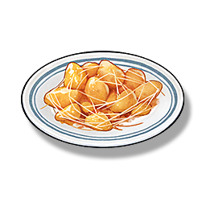

Candied Caltrops
Supplies

Increases the defense of all Resonators in the team by 18% and the maximum health by 8% for 30 minutes, only effective for the player's Character in multiplayer games.
One of the famous signature dishes of the Panhua Restaurant. Its sweet and soft taste is very popular among the children of Jinzhou.